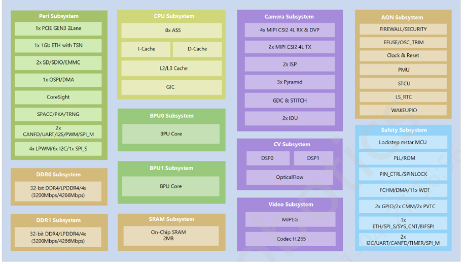

关于征程5代芯片¶
本节内容介绍J5芯片的片上系统和外设。
1. SoC¶
芯片的功能框图如下图所示：
CPU规格：J5芯片采用八核Cortex-A55作为主控CPU；
BPU规格：J5芯片采用双核地平线第三代贝叶斯 (Bayes) 架构的BPU；
DSP规格：J5芯片包含两个可编程的Vision P6 DSP模块，可用于CV计算加速；同时可以用神经网络计算。 该DSP支持SIMD和VLIW计算架构提升计算效率，频率最高到650MHz。 DSP可配置成256 8x8 MAC，总共达到0.67TOPS。
注解
J5内置的2个BPU Core，为业务层面的模型调度提供了非常灵活的多核调度能力，其中包括：
单帧单核：将单次模型推理手动调度到单个BPU Core上进行， 从而针对检测+分类等场景，可以将全图检测高优先级模型与一些低优先级模型进行物理隔离。
单帧双核：单次模型推理同时使用两个BPU Core的硬件资源，从而实现 真双核 的执行能力，可显著降低单次模型推理的延迟。
在DDR等资源未达到瓶颈的情况下， 单帧单核 可以保证两个BPU核的调度推理隔离。 多线程多帧双核 场景可以实现推理FPS的双倍提升。 针对大模型， 单帧双核 可显著降低单次模型推理的延迟。 但是 多线程多帧双核 则会由于双核调度的开销，无法实现FPS的双倍提升。 关于高效使用双核BPU的更多信息，请参考 《BPU SDK API手册》 来了解相关技术细节。
地平线J5 SoC严格按照功能安全要求和流程进行设计，集成多种安全机制，可对硬件故障进行快速检测和响应，符合ASIL-B标准。 J5芯片在2022年Q4将会完成功能安全认证。
2. 片内外设¶
支持4路2.5G MIPI CSI RX接口
支持2路2.5G MIPI CSI TX接口
支持1路DVP接口
支持8路I2C接口
支持4路SPI master接口和2路SPI slave接口，其中有1路SPI master和1路SPI slave接口复用
支持4路UART接口
支持4路CANF-FD接口
支持2路1Gb Ethernet接口，其中eth0接口支持TSN（时间敏感网路）
支持1路PCIe Gen3 2Lane接口
支持16 LPWM接口和2路PWM接口
支持1路EMMC和1路SD/SDIO接口
支持1路OSPI接口连接nor/hyper/nand flash
支持64bit LPDDR4/4X memory接口
支持2路Vision P6 DSP
Optical flow processor
支持2路I2S接口